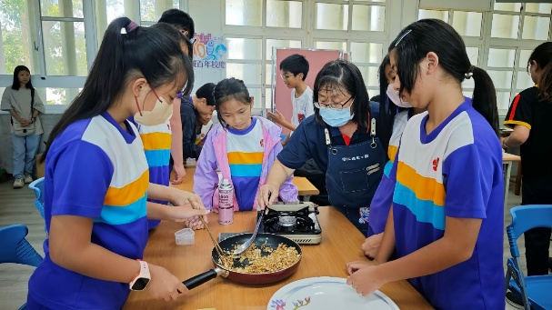
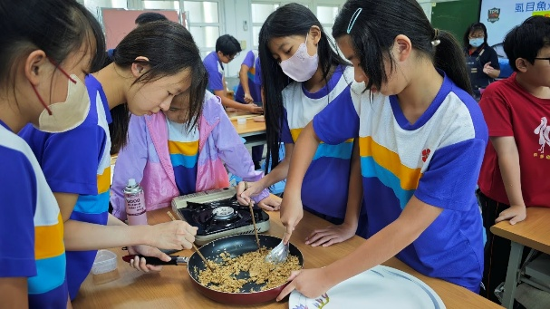
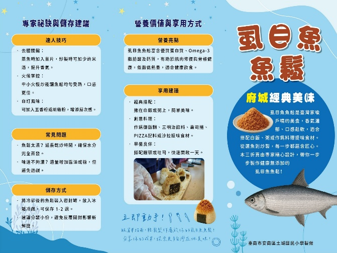
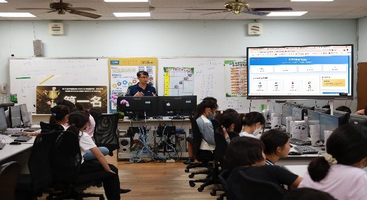
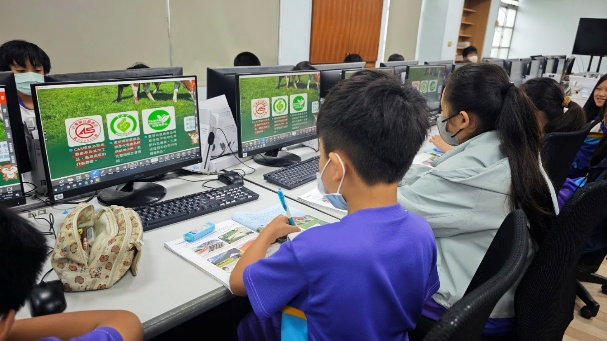
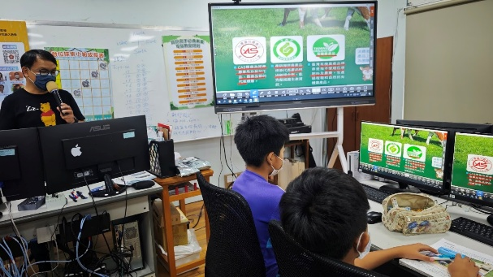
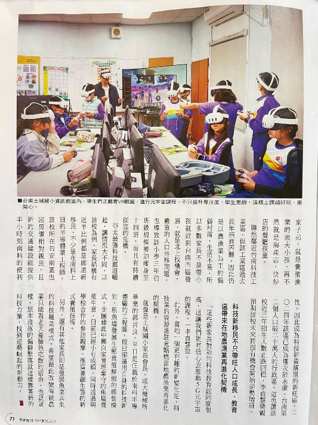
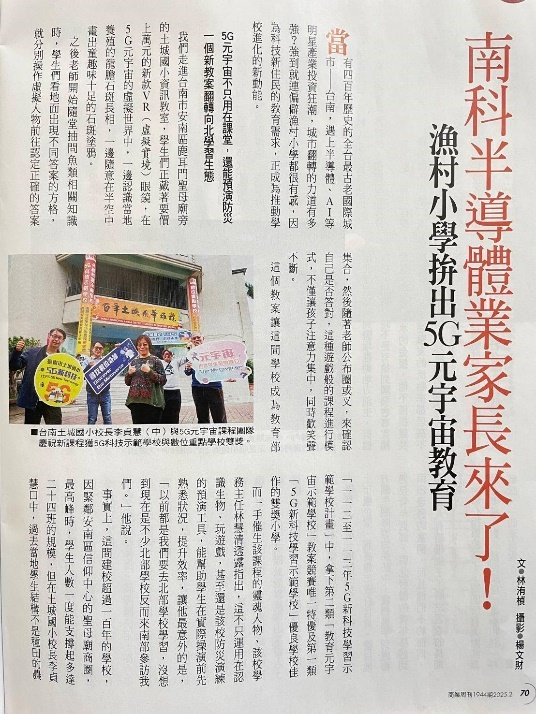

鱻魚遊學 — 八成學生願意在家分享所學

學生實地踏查在地魚塭，親訪在地漁民並體驗魚塭養殖工作，包括供氧、水質管理、魚種辨識及魚類營養認識等。
具體學習成果
- 能辨別魚種、了解養殖方法並完成一道在地魚料理
- 穿著青蛙裝進入魚塭的體驗，激發高度學習動機
- 超過八成學生願意主動在家嘗試料理或與家人分享學習內容
- 家長於 FB 粉絲頁回饋感謝，形成家庭間食農議題的討論
- 透過南市區漁會與青農合作，連結在地產業
113 年 3 月 1 日至 114 年 6 月 30 日，328 人次學生在九個課程中的學習轉變、家庭擴散與社區共鳴。
學生從「食魚」走向「識魚」與「惜魚」，將學習成果延伸至家庭餐桌與社區生活。

學生實地踏查在地魚塭，親訪在地漁民並體驗魚塭養殖工作，包括供氧、水質管理、魚種辨識及魚類營養認識等。

學生實地踏查城西魚塭與水圳系統，結合耆老訪談、家長參與及數位紀錄，重新認識家鄉的海洋文化與產業脈絡。
📌 平台連結：城西、土城、虱目魚與我（惜食教育）

課程結合自然科學、環境教育與 STEAM 實作，學生透過參訪在地農場「耕吉園」，動手設計與組裝簡易模型。
學生透過學習單認識虱目魚的各部位及其用途，從魚丸、魚鬆、魚酥到魚鱗膠原蛋白，發現每個部位都能被珍惜與轉化。

透過魚塭實地參訪與教師專業引導，學童深度體驗台南在地養殖文化，從觀察虱目魚各部位到理解全魚利用的惜食價值。
「親手製作魚鬆的時候，那香氣讓我們想起小時候外婆做的便當。炒魚鬆的過程很辛苦，但當我們用自己做的魚鬆和梅干，一起捏出熱騰騰的御飯糰時，心裡有一種踏實又溫暖的感覺。大家邊吃邊說，這一顆御飯糰像是包住了我們的努力、回憶和對家人的思念。」
— 學生課後分享

學生透過紙本操作與互動式網頁雙軌學習，加深對永續海鮮的認識。多數學生能清楚區分常見魚類的選購等級，並表示會在日常生活中影響家庭飲食選擇。

學生運用觀察與想像，結合海洋生態與永續理念，創作出充滿故事的陶藝作品。作品布置於校園走廊與魚菜共生教室外牆，成為長期展示的公共藝術牆面。

課程結合 VR 頭盔模擬體驗活動，採用 POE 教學模式（Predict-Observe-Explain），透過實驗組與控制組前後測比對，驗證教學成效。

學生運用前階課程的學習成果，透過互動式元宇宙平台，建構專屬的「鱻魚時光展館」，並與山區學校跨校交流。